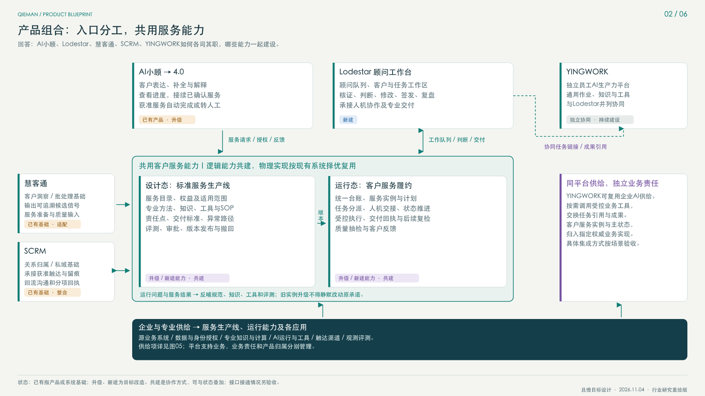

专业方法经过标准化、工具化、评测和发布，形成可复用的服务包。智能顾问运营L3逐场景验证其可运行性、质量和异常路径。
INDUSTRY RESEARCH → QIEMAN PRODUCT DESIGN
一次连续服务，
六个清晰视图。
围绕客户目标，把服务生产、客户履约、角色产品和平台供给连成体系。研究行业原件后，重新画且慢。

需要重塑的，是服务的生产与持续交付
且慢已经有面向客户、顾问、运营和员工的不同产品。真正需要贯通的，是客户所表达的目标，如何成为有范围、有责任、有证据、能接续的服务。AI小顾和Lodestar提供不同角色的体验；背后共用服务标准、客户服务记录与履约能力。
同一客户服务实例关联已确认诉求、服务承诺、责任人、计划任务、交付和后续复检。AI与真人接棒时，服务上下文和责任持续存在。
小顾面向客户，Lodestar面向顾问；YINGWORK保持独立通用AI生产力定位。慧客通与SCRM的已有业务深度通过明确契约进入共用体系。
3.0 → 4.0要说清新增行为。 内部既有3.0方案已提出工厂化、记忆、主动与持续服务方向。4.0的候选升级应落在可验收的跨入口接续、持久服务状态、角色协同与运行反馈；不能只把已有方向换名，也不能据规划断言已上线。
六张图，各回答一个问题
按“经营价值 → 产品分工 → 具体服务 → 共用对象 → 平台供给 → 建设演进”阅读。宣导可用图01、02；内部落地继续看图03—06。点击缩略图切换，放大可横向查看。
内部按“角色体验、共用契约、服务结果”分工
产品团队维护各自角色体验；共建域设置统一契约与状态主责；业务服务负责人承担服务结果。下面是建议职责，未指派具体人员，也未承诺排期。
| 产品 / 系统 | 主责体验与能力 | 共用契约 | 整合边界 |
|---|---|---|---|
| Lodestar | 顾问工作优先级、客户与任务工作区、诊断规划、判断修改、审核签发、专业协作与复盘体验。 | 消费和推进统一客户台账、服务实例与计划任务；使用受控工具和渠道能力。 | 顾问作业页面与AI对话共享业务上下文；与SCRM既有页面逐项决定复用、嵌入或迁移。 |
| AI小顾4.0 | 客户对话与信息补全、服务解释和接续、客户侧服务进展、授权与转人工体验。 | 按角色与用途读取同一客户事实、服务包和服务实例，提交受控服务请求与反馈。 | 既有版本能力逐项复核；4.0目标能力、生产上线和服务效果分别验收。 |
| YINGWORK | 通用员工AI体验、个人工作空间、跨业务工具与知识使用、通用工作成果。 | 可按需共用AI平台与受控业务API，交换任务链接、成果引用或通过可选集成协同。 | 协同方式需验收；不默认担任Lodestar必需宿主，也不默认拥有客户服务实例与任务主账。 |
| 慧客通 | 洞察场景、分析范围、规则和输出定义、批量运行、证据与结果追溯。 | 建议输出带来源、时间、版本与有效期的候选信号及服务准备材料。 | 具体接口未实测；洞察不直接覆盖客户权威事实，进入服务策略后再形成任务或动作。 |
| SCRM | 客户关系与归属、名单线索、既有服务过程、企微渠道承接、沟通留痕和执行记录。 | 建议按统一任务与动作标识承接执行，回流关系变化、沟通和分项回执。 | 具体接口未实测；保留其已有业务深度，与Lodestar整合时共用权威服务状态，避免双主写。 |
五个共建域，每域交付可验收的业务契约
| 共建域 | 建议统一主责职能 | 交付物 | 验收口径 |
|---|---|---|---|
| 统一客户服务台账 | 客户服务平台产品职能（建议为本域统一业务契约主责） | 客户/家庭标识与映射、关系与授权模型、事实/沟通原文/摘要/AI推断分层、服务历程与数据来源/时效/版本契约、受控上下文读写接口。 | 同一客户跨入口事实与服务状态一致；可追溯到权威源；家庭与员工权限隔离；过期、缺失和冲突显式处理；AI推断可确认、更正或撤回。 |
| 标准服务包生产与版本 | 服务产品与专业标准职能 | 服务目录与权益定义、标准模板、适用/排除条件、输入与证据要求、SOP与工具依赖、人工责任点、交付标准、异常路由、版本审批发布及撤回规则。 | 同一模板可被AI与真人按各自权限使用；每版有专业责任职能、依据和变更记录；正常/异常/拒绝/过期案例通过；已运行实例可追到原模板版本，升级不静默改变既有承诺。 |
| 客户服务实例、计划与任务 | 客户服务平台产品职能（建议为服务与任务主账主责） | 客户服务实例及目标、责任人、承诺与阶段；服务计划、任务依赖与状态机；领取/移交/暂停/完成/取消、幂等及并发控制；交付物与回执的统一标识。 | 同一服务跨AI和顾问接续不重复建单；同一任务只有一个权威状态；并发处理不覆盖他人判断；超时和交接有责任队列；完成必须符合服务定义并附结果证据。 |
| 服务编排与人机协同 | 顾问运营与服务流程产品职能 | 事件到服务的适配策略、信号去重/静默/优先级、任务编排、上下文与运行包装配、人工审批与专业判断、异常分流、受控执行、回执和运行恢复契约。 | 选定正常作业在界定边界内连续运行；异常能停、能转交、能恢复；中断重试不重复派单或触达；AI与真人接棒保留依据和责任；高风险动作按授权执行，生成材料不误标服务完成。 |
| 服务质量与反馈改进 | 服务质量与运营治理职能 | 服务质量标准与人工基线、场景评测和抽检集、事实/授权/专业质量检查、客户反馈与投诉分类、错误处置与回滚规则、复盘及模板/知识/工具改进队列。 | 客户反馈能关联到服务实例和交付版本；问题有主责、修复证据及复核；质量/效率/体验分开测量；经营效果使用适当对照与归因，不用生成量、触达量或相关性替代服务结果。 |
客服、私域、顾问及VIP专家提供典型与异常服务样本；源业务及数据团队给出可核验字段和接口；平台团队提供授权执行与运行恢复；质量职能维护标准、评测及复核。
选一类可完成的首发服务；选择服务与任务主状态的权威实现；明确标准服务包负责人、自动化动作边界和人工接管队列。
同一件服务从受理到顾问签发、获准交付、客户决定及后续约定可追溯；缺信息、拒绝、超时和重试都有真实处理路径。之后再逐场景扩展小顾4.0。
对外可以讲的一句话
且慢正在建设一套围绕客户目标的持续服务体系，让AI小顾与专业顾问共享经过验证的服务能力，在统一服务记录上协同，为客户提供可接续、可解释、有责任的服务。
“正在建设”对应目标规划。发布时按实际验收范围讲能力，不把六图中的目标作为已上线功能。
先看原件，再决定借什么
以下为官方或作者本人来源。已查看原图的案例注明图页位置；公开报告展示自行绘制的且慢蓝图，原图通过链接查阅。历史架构、厂商参考方案、产品文档和方法文章分别标识。
CN01 · 经营全景 / 服务生产体系
平安银行
私人银行和财富管理报告 ↗抽取方法：把客户、经营交付与专业支持资产分开；横向建设工程支撑整个经营体系。
落到且慢：图01经营全景；图06把L3视作变革工程。
不复制全牌照集团模式；2019年规划不能证明2026年上线状态。
原图已查看CN02 · 财富业务 / 应用能力架构
恒生电子
We6品牌手册 ↗抽取方法：角色终端、业务能力、共享服务及基础平台分层；专业流程另画角色与反馈。
落到且慢：图02先呈现业务复用，再标产品承载。
厂商参考架构不等于某机构全量部署；不复制银行全产品矩阵。
原图已查看D01 · 客户 / 顾问双工作站与共享引擎
Deloitte
The future of wealth management revisited ↗抽取方法：客户工作站与顾问工作站共享建议能力、数据与互操作层，外围专业能力各有边界。
落到且慢：图01角色交付；图05用能力契约组织底座。
历史参考架构，不是当前Agent平台或且慢生产集成证明。
原图已查看G01 · 产品边界 / 上下游生态
BlackRock
Aladdin Wealth — connected experience ↗抽取方法：明确产品内部、CRM/规划/OMS等外部相邻系统，以及单独的集成能力带。
落到且慢：图02产品边界；图05跨产品供给。
横向连接不等于严格串行服务流程，也不代表每家机构都启用全部连接。
原图已查看G02 · 数据平台 / 应用 / 外部工具
Addepar
The Addepar way ↗抽取方法：数据平台支撑分析、报告与客户门户；外部CRM、规划等工具保留边界。
落到且慢：图02共用支撑与应用分离；图04记录语义共用。
图未定义完整服务责任模型，不把数据汇聚等同源事实全部迁库。
原图已查看G03 · 业务对象 / 模板与执行分离
Salesforce
Financial Services Overview / Action Plan Framework ↗抽取方法：主体、金融账户、目标、互动与服务分域；模板、模板版本、执行计划与实际任务分别建模。
落到且慢：图04标准服务包、客户实例、任务及运行上下文分开。
Account主体不等于投资账户；Action Plan不等于资产配置方案；不照抄许可与全部对象。
原图已查看 另一原件 ↗G04 · 架构图 / 活动泳道分图
MuleSoft
Wealth client onboarding — Accelerator 1.12.0 ↗抽取方法：同一财富接入用例，系统/API集成架构和业务活动分开表达；分支、失败通知与状态回写明确。
落到且慢：图03具体服务交接；图05能力供给另图表达。
方案包含手动机会转换与模拟KYC，不当作机构生产自动化证明。
原图已查看M2 · 服务蓝图方法
Sarah Gibbons · NN/g
Service Blueprints: Definition ↗抽取方法：围绕一个客户目标，将客户动作、可见服务、后台作业与支持过程按旅程对齐。
落到且慢：图03只画“半年后用款检视”一个场景，并标交互与可见性边界。
不能用一张蓝图代表所有客户场景；AI与真人不固定属于前台或后台。
原图已查看M1 · 用户活动 / 发布切片方法
Jeff Patton
Story Mapping Quick Reference ↗抽取方法：用户活动构成横向骨架；发布切片横跨活动，交付完整可用的结果。
落到且慢：图06按顾问作业切片，L3、Lodestar和4.0并行围绕服务闭环交付。
故事地图不是精确工作流，也不回答系统或数据权威划分。
原图已查看M4 · 愿景 / 重点问题 / 结果责任
Marty Cagan · SVPG
Vision vs. Strategy / Product Strategy / Alternative to Roadmaps ↗抽取方法：愿景表达有价值的未来；策略选择重点问题，团队对可衡量结果负责。
落到且慢：图01服务价值；图06按结果设放量闸门。
所读文章没有官方“总产品蓝图”示例图；这里只借原则，不冒称套用作者模板。
原文已读 · 不声称存在示例图 另一原件 ↗补充方法与供给参考
- 招商银行 · 2022年度业绩摘要：实页30，云、数据中台与技术中台供给；仅作图05补充，不能当财富产品总架构。
- Salesforce Architect · Diagram Framework：先明确受众与问题，再选择能力图、系统全景、流程、数据模型、路线等视图；不以一张总图回答一切。
- BIAN · v14 Capability Map / Service Landscape：官方门户区分能力、服务域、信息模型与场景。原图仅部分视觉核验，不声称完整核验全部银行服务域；不移植全量目录。
- Marty Cagan · The Alternative to Roadmaps：重点问题与团队结果目标，补充建设切片的责任方式。
这些参考改变了什么： 平安启发经营与服务价值分层；恒生、Deloitte、BlackRock、Addepar帮助明确应用和共享能力的边界；Salesforce帮助拆分标准定义与客户执行记录；NN/g用于具体服务协作；Patton和Cagan用于完整可用的建设切片及结果责任。所有且慢关系和分工均为本次设计推论，并非参考企业对且慢的结论。